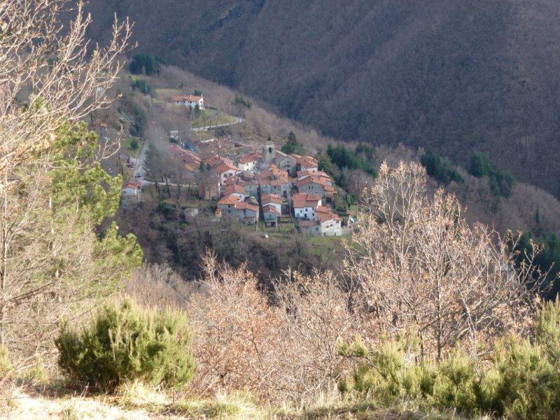

Spignana
Spignana (780 m s.l.m.) era una tappa della via Pistoia-Modena, forse l’ultima prima di varcare l’Appennino per chi utilizzava il passo della Calanca.
La tradizione locale attribuisce a questa località origini antiche che hanno trovato solo limitati riscontri nelle ricerche archeologiche.
La chiesa di San Lorenzo a Spignana, documentata nel XIII-XIV secolo, è stata trasformata più volte in particolare nel XVIII secolo
Cartoline vecchia Spignana Galleria fotografica
Cartoline Spignana Galleria fotografica
Spignana Dizionario geografico fisico storico della Toscana di Emanuele Repetti,1841